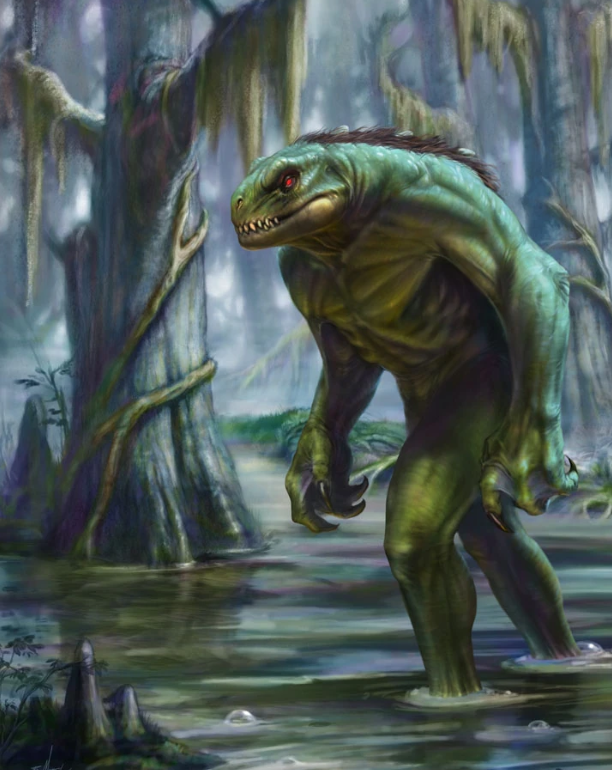

{% extends '_layout.html' %}
{% block title %}Cryptid Catalog | Encyclopedia{% endblock %}
{% block body %}
- BACK
- LIZARD MAN OF SCAPE ORE SWAMP
- Type: Semi-Aquatic

- In the folklore of Lee County, South Carolina, the Lizard Man of Scape Ore Swamp (also known as the Lizard Man of Lee County) is an entity said to inhabit the swampland of the region. First mentioned in the late 1980s, the purported sightings and damage attributed to the creature yielded a significant amount of newspaper, radio and television publicity.
On July 14, 1988, the Lee County sheriff's office investigated a report of a car damaged overnight while parked at a home in the area of Browntown outside Bishopville, South Carolina, on the edges of the Scape Ore Swamp. The car reportedly had toothmarks and scratches with hair and muddy footprints left behind. Sheriff Liston Truesdale noted this was the start of various claims that eventually coalesced into a story about a lizard man in the swamp. Prompted by the news of the vehicle damage, 17-year-old local Christopher Davis reported to the sheriff that his car was damaged by a creature he described as "green, wetlike, about 7 feet tall and had three fingers, red eyes, skin like a lizard, snakelike scales" two weeks prior. According to Davis, he was driving home from working the night shift at a fast food restaurant when his car got a flat tire. After fixing it, he saw a creature walking toward him. Davis got in his car and began to drive, but the creature was soon on top of the car. He applied his brakes, causing the creature to roll off the car, giving Davis enough time to escape.
{% endblock %}